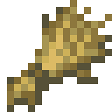
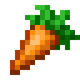
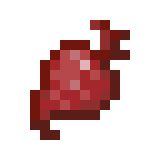

🎯 Цели занятия
- Изучить команды для работы с землёй: вспахивание и посадка
- Научиться использовать разные виды семян
- Создать программу для автоматической посадки фермы
- Построить ферму с разными культурами и декорациями
📋 План занятия
| Этап занятия | Время | Что делаем |
|---|---|---|
| Орг. момент | 5 мин | Приветствие, настрой на занятие |
| Команды фермера | 15 мин | Изучаем команды для работы с землёй |
| Семена и культуры | 10 мин | Какие бывают семена и их ID |
| Практика: ферма | 40 мин | Создаём программу для посадки фермы |
| Бонус: постройки | 15 мин | Строим амбар, дом или мельницу |
| Итоги | 5 мин | Проверяем знания |
| Итого | 90 мин | — |
1 Команды для работы с землёй
У агента есть специальные команды для работы с землёй и посадки растений:
| Команда | Действие | Описание |
|---|---|---|
вспахать | Превращает землю в грядку | Используется перед посадкой |
посадить | Сажает семена в грядку | Нужно выбрать слот с семенами |
собрать урожай | Собирает выросшие растения | Собирает урожай с грядки |
полить | Поливает грядку водой | Ускоряет рост растений |
обработка_земли.txt
-- Как агент сажает одну грядку
1. вспахать -- делаем грядку
2. посадить -- сажаем семена (из активного слота)
-- Чтобы посадить целую ферму 5x5:
повторить 5 раз [
повторить 5 раз [
вспахать
посадить
двигаться вперёд
]
-- Переход на следующую строку
повернуть налево
двигаться вперёд
повернуть налево
]
💡 Важно: перед посадкой убедись, что в активном слоте агента лежат нужные семена! Используй команду
выбрать слот N для смены семян.
2 Какие бывают семена?
В Minecraft есть много разных культур. Вот основные из них:

Пшеница
ID: 59

Морковь
ID: 141

Картофель
ID: 142

Свёкла
ID: 207
🌱 Совет: разные семена растут с разной скоростью. Пшеница и морковь растут быстрее всего. Для того, чтобы земля не засохла, нужно поставить воду рядом с грядками.
🧠 Какой слот выбрать?
Агент хочет посадить пшеницу. Какой слот нужно выбрать, если в слоте 1 — пшеница, в слоте 2 — морковь, в слоте 3 — картофель?
Слот 1
Слот 2
Слот 3
🛠️ Практическое задание: построй ферму
Выполнено шагов: 0 из 4
Создай в Minecraft Education программу для автоматической посадки фермы с разными культурами.
Основное задание:
💡 Подсказка: для вспахивания используй команду
вспахать. Для смены семян — выбрать слот 1 (пшеница), выбрать слот 2 (морковь), выбрать слот 3 (картофель).
🌟 Идея: сделай разные грядки для разных культур. Например, первый ряд — пшеница, второй — морковь, третий — картофель. Так ферма будет выглядеть красиво и разнообразно!
📝 Проверь себя
1. Какая команда превращает землю в грядку?
2. Что нужно сделать перед посадкой семян?
3. Какой культура быстрее растёт?
4. Какую команду использовать для смены семян у агента?
5. Что ускоряет рост растений в Minecraft?
💭 Рефлексия
Напиши, что тебе понравилось, а что было сложно:
🤖
Спроси Алису (ИИ-помощник)
Нажми на вопрос — Алиса ответит тебе прямо сейчас!
💬 Нажми на любой вопрос — откроется Алиса с готовым ответом.
💡 Хочешь спросить что-то своё? Открой Алису сам и задай любой вопрос про фермерство в Minecraft.
Просто скажи: «Алиса, как построить автоматическую ферму в Minecraft?»
Просто скажи: «Алиса, как построить автоматическую ферму в Minecraft?»
⚠️ Никогда не отправляй Алисе личные данные (адрес, телефон, пароли) — вопросы обсуждай только с родителями и преподавателем.